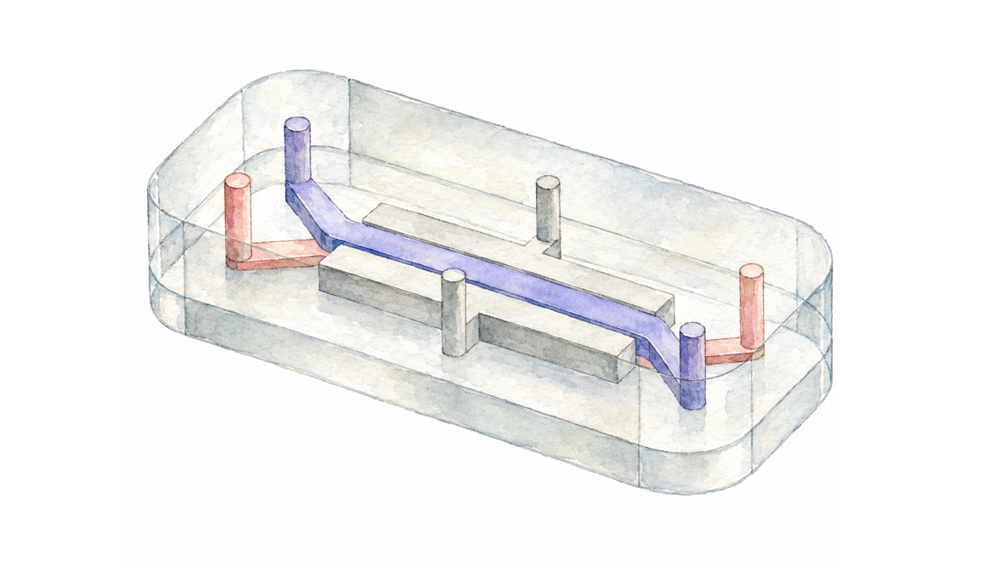
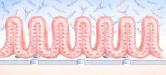
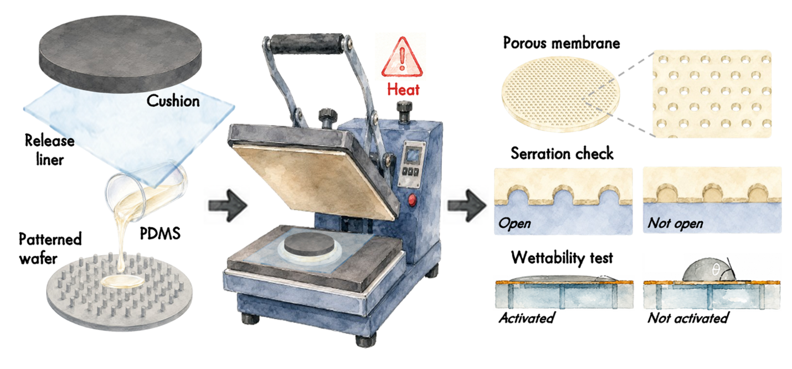
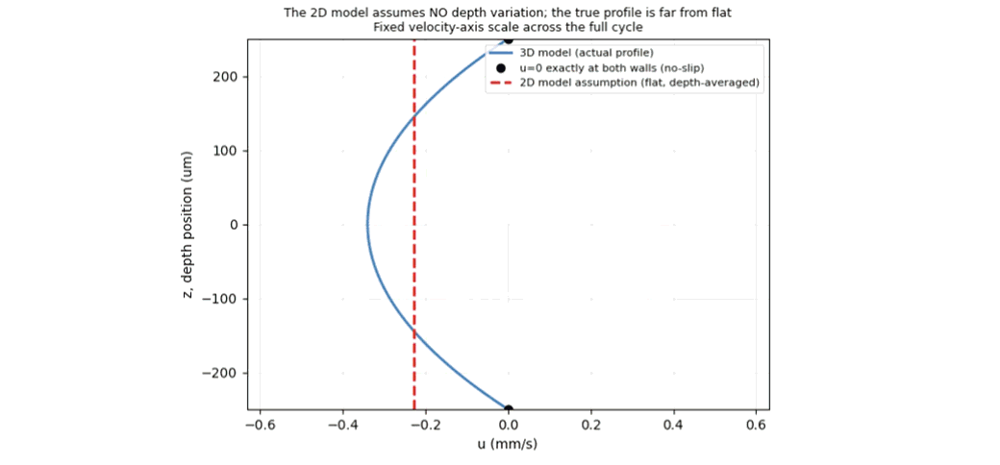
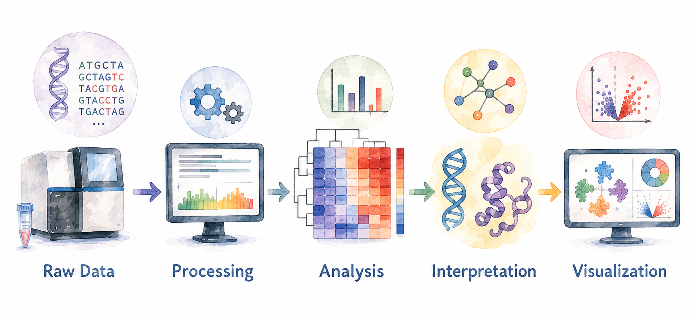
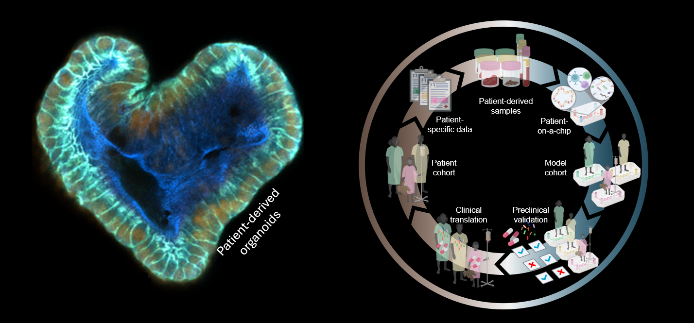
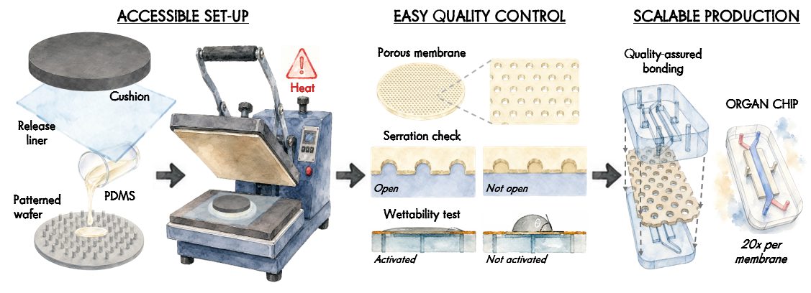
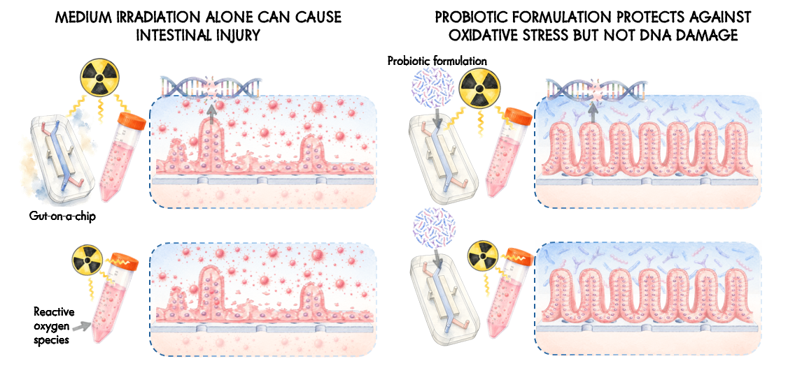

DAILY INTELLIGENCE: Selected daily briefings and a weekly research shortlist covering bioengineering, biotech, microbiome and intestinal disease, organ-on-chip, NAMs, regulation, funding and relevant papers.
Nam Than MS
Research Focus
My work is defined by integrating experimental biology, computational fluid dynamics, and bioinformatics to study patient-specific organoid–microbiome interactions as variables in stretchable gut-on-a-chip devices.
Organ-on-a-chip systems
Microfluidic gut-on-a-chip and multiplex organ-on-a-chip platforms for disease modeling and pharmaco-toxicology.

Host–microbiome interactions
Probiotic and patient-derived microbiota effects on epithelial oxidative stress, barrier function and inflammation.

Microfabrication
Porous PDMS membranes, photolithography, soft lithography and additive manufacturing for rapid device prototyping.

Fluid dynamics
Finite-element and computational modeling of flow, shear stress and transport in microfluidic systems.

Bioinformatics
Single-cell and bulk RNA-seq, 16S analysis and quantitative interpretation of engineered tissue systems.

Translational NAMs
Human-centric research and safety testing tools designed to replace, reduce, or refine animal use.

Publications
Nanofiber-supported decellularized matrix membrane creates a biomimetic biochemical and biophysical niche for intestinal organoid epithelium
What Happened
The colon-specific NaDE membrane enhances intestinal stem-cell maintenance and proliferation while promoting rare secretory epithelial lineages—including enteroendocrine, tuft, and Paneth cells—that are underrepresented on conventional synthetic membranes.
Method / Model
A nanofiber-supported membrane combines porcine colon-derived decellularized ECM with an ultrathin fibrous scaffold to recreate both the biochemical composition and tissue-relevant stiffness (~230 kPa) of the intestinal ECM, then supports human colon organoid-derived epithelium.
Why It Matters
Shows that simultaneously engineering the biochemical and mechanical niche can produce a more physiologically representative intestinal epithelium, improving membrane-based models for disease modeling, host–microbiome studies, and drug testing.
Advanced fabrication protocol of an elastic porous membrane for organ-on-a-chip applications

What Happened
Heat pressing reliably produces thin, open-pore elastic PDMS membranes, while simple visual and wettability checks identify pore and bonding defects before device assembly.
Method / Model
Heat-press molding with pre-patterned wafers, release liners, and elastic cushioning, combined with pore-opening and surface-activation quality control.
Why It Matters
Provides an accessible and reproducible workflow for fabricating mechanically active organ-on-a-chip devices while reducing fabrication failures and wasted devices.
Probiotic intervention mitigates radiation-induced intestinal injury by alleviating oxidative stress in a human gut-on-a-chip

What Happened
Radiation-damaged culture medium drives oxidative stress and intestinal epithelial injury, while probiotic treatment suppresses ROS and preserves epithelial microarchitecture without directly preventing radiation-induced DNA damage.
Method / Model
A human gut-on-a-chip exposed to 8 Gy gamma radiation, with epithelial cells and culture medium irradiated separately or together, followed by probiotic intervention to distinguish direct radiation damage from medium-mediated oxidative injury.
Why It Matters
Reveals extracellular, radiation-induced oxidative stress as a major contributor to intestinal injury and supports probiotics as a potential live biotherapeutic countermeasure for GI acute radiation syndrome.
Mechanostimulatory cues determine intestinal fibroblast fate and profibrotic remodeling in a physiodynamic human gut-on-a-chip
What Happened
Fluid shear stress, but not mechanical strain alone, determines fibroblast fate: normal fibroblasts undergo injury and apoptosis, while inflammation-associated fibroblasts resist shear and adopt profibrotic phenotypes. An intact epithelial barrier protects fibroblasts from this shear-induced remodeling.
Method / Model
A physiodynamic human gut-on-a-chip independently controls fluid shear stress and cyclic mechanical strain while modeling healthy versus inflammation-associated fibroblasts under intact or impaired epithelial barriers.
Why It Matters
Reveals fluid shear stress as a previously underappreciated driver of early intestinal fibrosis and epithelial barrier integrity as a biomechanical safeguard against pathological fibroblast remodeling.
Bioengineered human gut-on-a-chip for advancing non-clinical pharmaco-toxicology
What We Synthesized
Gut-on-a-chip technologies can recreate key features of the human intestinal microenvironment, including luminal flow, mechanical motion, oxygen gradients, and live host–microbiome interactions, while enabling controlled investigation of how these
Scope / Focus
We review advances in human gut-on-a-chip models for studying the reciprocal interactions among drugs, the intestinal host, and the gut microbiome, with emphasis on drug metabolism and toxicity.
Why It Matters
Gut-on-a-chip platforms could bridge the translational gap between conventional non-clinical testing and human trials by providing more physiologically relevant and potentially more predictive models of drug response.
Modelling host-microbiome interactions in organs-on-chips
What We Synthesized
Organ-on-a-chip platforms can recreate dynamic host–microbiome interfaces by combining human tissues with living microbes under controlled biochemical and physical microenvironments.
Scope / Focus
We highlighted organ-on-a-chip strategies for modeling host–microbiome interactions across multiple in vitro systems, highlighting approaches to control microbial culture, oxygen gradients, tissue interfaces, and physiologically relevant microenvironments.
Why It Matters
These platforms enable mechanistic investigation of human–microbiome interactions that are difficult to isolate in animal or conventional culture models, creating opportunities to study microbiome-driven disease and develop microbiome-targeted therapies.
Live probiotic bacteria administered in a pathomimetic Leaky Gut Chip ameliorate impaired epithelial barrier and mucosal inflammation
What We Synthesized
Live probiotics (LGG or VSL#3) colonize the damaged intestinal mucosa and restore barrier function, tight-junction organization, and mucus production while suppressing inflammatory signaling and cytokine secretion.
Scope / Focus
A pathomimetic human Leaky Gut Chip uses TNF-α and IL-1β to induce persistent epithelial barrier dysfunction and inflammation under physiological flow, cyclic deformation, and an oxygen gradient, followed by live probiotic co-culture.
Why It Matters
Demonstrates that live probiotics can actively reverse an established dysfunctional intestinal barrier—not merely prevent damage—and establishes the Gut Chip as a platform for mechanistic testing of live biotherapeutic products.
Quantitation of ethanol in UTI assay for volatile organic compound detection by electronic nose using the validated headspace GC-MS method
What Happened
Uropathogenic and nonpathogenic E. coli produce distinguishable ethanol levels and VOC fingerprints, but repeated e-nose measurements progressively alter the sample: ethanol drops by >15% within 30 minutes, reducing classification performance when later measurements are included.
Method / Model
A validated headspace GC-MS method quantifies ethanol in E. coli-inoculated urine alongside a six-sensor electronic nose and artificial-neural-network classification of VOC fingerprints.
Why It Matters
Establishes analytical quality control for e-nose training data, showing that sample stability and measurement timing must be controlled to develop reliable VOC-based, point-of-care UTI diagnostics.
Achievements
Awards & Honors
Engineering Foundation Endowed Fellowship UT Austin
Graduate Presidential Scholarship
Graduate Fellowship
Travel Awards
Mary B. Stark Travel Award Cleveland Clinic
Mary B. Stark Travel Award Cleveland Clinic
Graduate Student Virtual Event Travel Awards San Jose State University
Gut Microbiome, Yogurt and Probiotics Fellowship Danone North America
Dean's Prestigious Fellowship Supplement UT Austin
William Lower Award Cleveland Clinic
Professional Development Awards UT Austin
Invention & Patents
Robust and Scalable Manufacturing of Ultrathin Porous PDMS Membranes Cleveland Clinic
Multiplex Organ-on-a-Chip (EXORM) Cleveland Clinic
A Multiplex Organ-on-a-Chip
Design and creation of a Leaky Gut chip model for validating probiotic effects Cleveland Clinic
Activities
Presentations
Cold Spring Harbor Laboratory Meetings: Bioengineered Tissue Systems & Models Conference
FMT-qualified microbiota mitigates epithelial oxidative stress and inflammation in a patient-derived Crohn’s disease-on-a-chip
Digestive Disease Week Conference
Gut Microbiota Directly Controls Epithelial Oxidative Stress and Inflammatory Responses in a Patient-specific Crohn’s Disease-on-a-chip
FASEB Gastrointestinal Tract XXI: Life, Death, and Disease Conference
Gut Microbiota Directly Controls Epithelial Oxidative Stress and Inflammatory Responses in a Patient-specific Crohn’s Disease-on-a-chip
Inflammation & Immunity Trainee Seminar Series Department Seminar
Probiotic Intervention Mitigates Radiation-Induced Intestinal Injury by Alleviating Oxidative Stress in a Human Gut-on-a-chip
FMT-qualified microbiota suppresses epithelial oxidative stress and pathogenesis in a patient-derived Crohn’s disease-on-a-chip
Modeling host-microbiome interactions in organ-on-a-chip platforms.
Gut Microbiota Orchestrates Pathological Signature in a Patient-specific Crohn’s Disease-on-a-chip
Biomedical Engineering Society Annual Meeting Conference
Regenerative Effects of Live Probiotics on Mucosal Barrier and Inflammation in a Microengineered Pathomimetic Leaky Gut Chip
COMSOL Simulation and Analysis of the Effects of Gap Size Variation with a Constant Row Shift Fraction on Separation Resolution in Microfluidic Deterministic Lateral Displacement
The Society for Laboratory Automation and Screening Conference
An Electronic Nose to Differentiate Bacterial Species Based on Their Metabolic Volatile Organic Compounds
American Society for Microbiology Conference
In vitro Predictive Model for Urine Infected with Escherichia coli
Outreach
Trainee Research Association Cleveland Clinic
Communication Committee
Communication Committee
Buddy Mentor Program
Research and Education Training Center Cleveland Clinic
Summer Student Poster Day
Northeastern Ohio Science and Engineering Fair
Synopsys Championship Science Fair Synopsys Outreach Foundation
Virtual Event
Background
Education
Doctor of Philosophy The University of Texas at Austin
Master of Science San Jose State University
Bachelor of Science University of California, Davis
Experience
Predoctoral Research Fellow Cleveland Clinic
Graduate Research Assistant The University of Texas at Austin
Research Intern IBM Almaden Research Center
Instructional Student Assistant San Jose State University
Formulation Lab Technician III Teknova
Connect
Feel free to reach out for research, collaboration, or ideas!